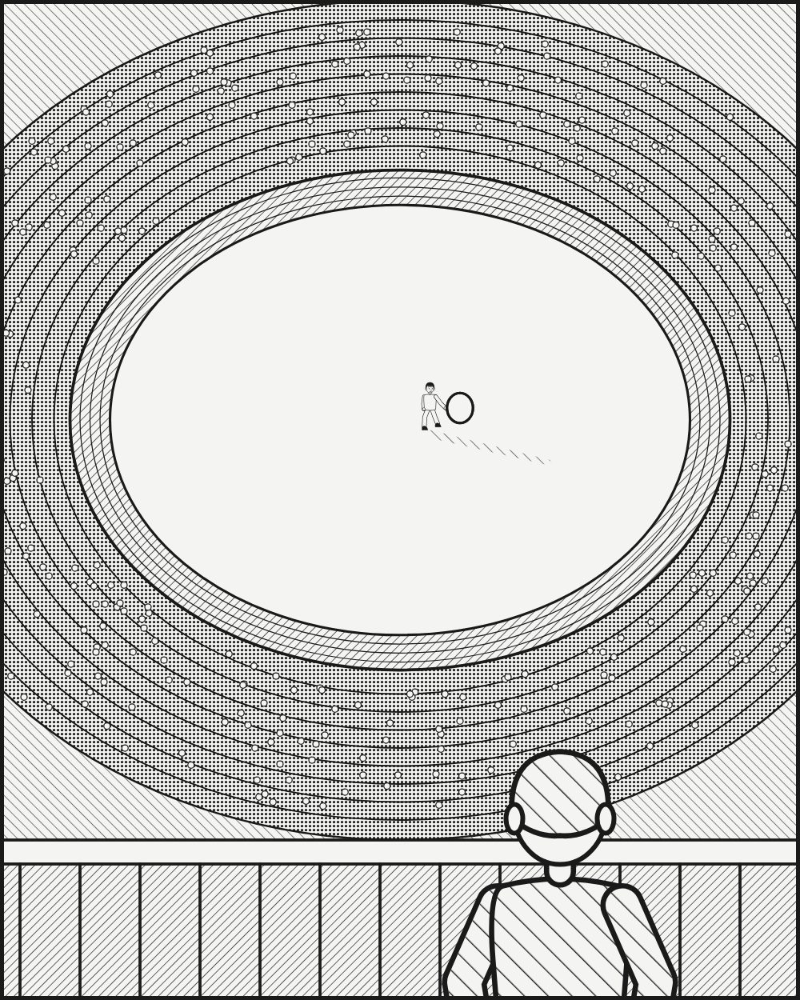

광고·마케팅 업계 뉴스 · 발행인 SM C&C 윤석진
굴렁쇠 하나로 세계를 조용하게 만든 이야기꾼

독자 여러분, 오늘은 광고판 바깥에서 광고인의 상상력을 키운 사람을 소개합니다. 문학평론가로 출발한 이어령은 1982년 일본에서 『축소지향의 일본인』을 내며 한 사회의 취향을 '작게 줄이는 힘'으로 읽어 냈습니다. 1988년 서울올림픽 개·폐회식 기획을 맡아서는 떠들썩한 무대 한가운데 한 아이가 굴렁쇠를 굴리며 텅 빈 운동장을 가로지르는 장면을 만들었지요. 수만 명이 숨을 죽인 그 몇십 초는 지금도 '여백이 메시지가 된' 장면으로 회자됩니다. 이후 초대 문화부 장관을 지냈고, 디지털과 아날로그를 합친 '디지로그' 같은 말을 만들며 시대를 한 단어로 요약하는 재주를 보였습니다. 브리프 한 장을 한 문장으로 줄여야 하는 우리에게 꼭 필요한 감각입니다.